SpyTec GL300 GPS tracker
Maxwell Fisher - 2021-05-13
I bought this device a while back to mess around with. It's a small GPS tracker that uses cellular data, meaning that you can see where it is located in nearly any location where phone service is available
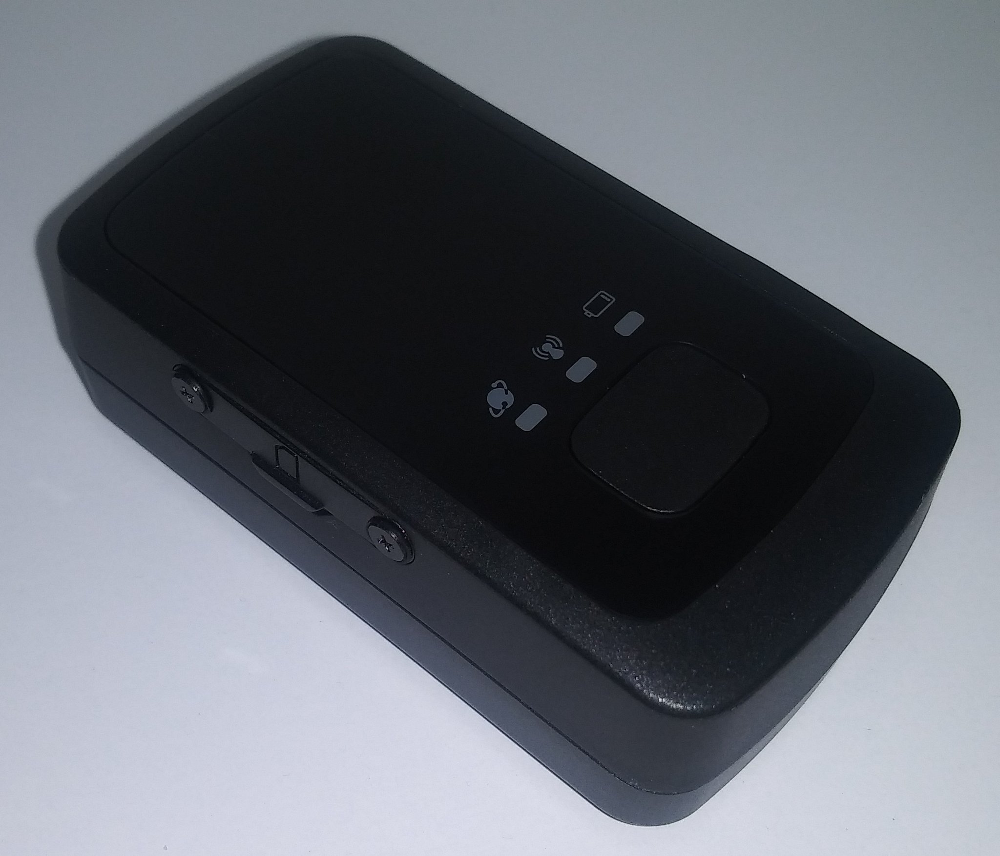 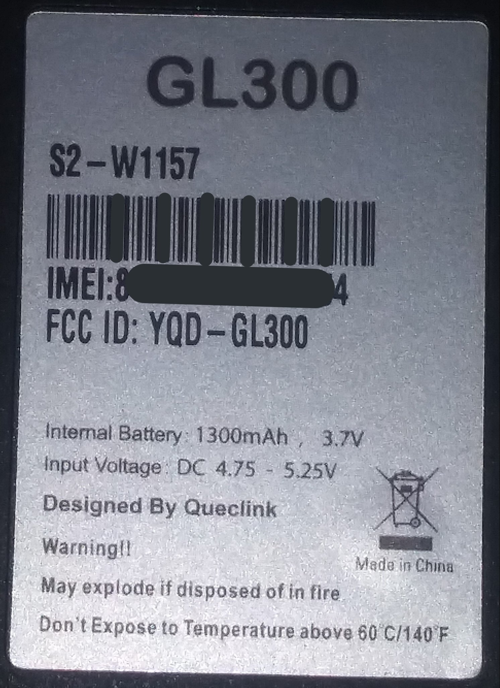
{kind=link}
{kind=link}
It charges via mini USB, and so I'm wondering if I could get access to it using that
After being plugged in for a few minutes to charge, it now shows 2 flashing lights
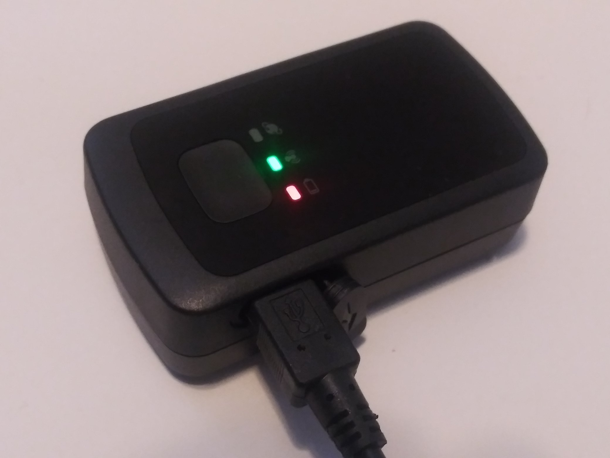
{kind=link}
Though I still can't get any data from it even after trying a few different button combinations, so I'm thinking that the data lines aren't wired up. Which is strange, because it has the pins that are used for data

It's held together by 4 screws, but they are covered in a plug thing, making me think that the designers don't want people to know what the inside looks like. What secrets does it contain? A sim card, the meaning of life, or a tiny phone? I guess we'll never know
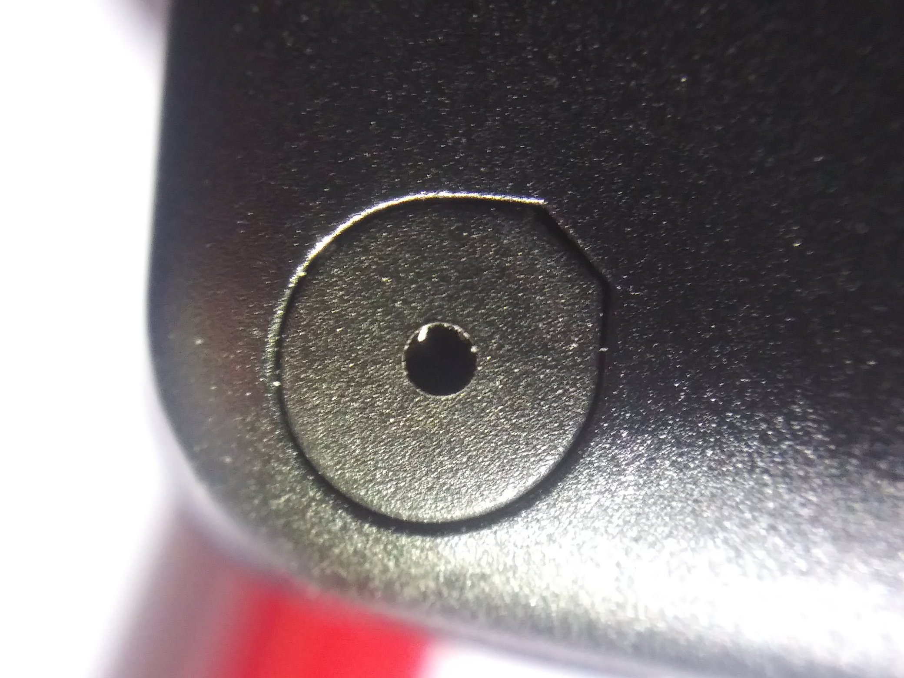
{kind=link}
Luckily the plugs aren't glued in, though it's still a bit difficult to remove them
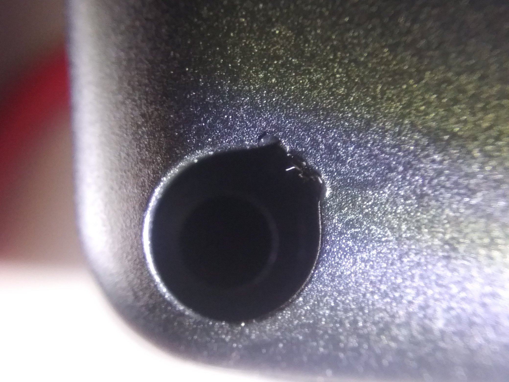
{kind=link}
Opening the case reveals 2 half's – one with a battery
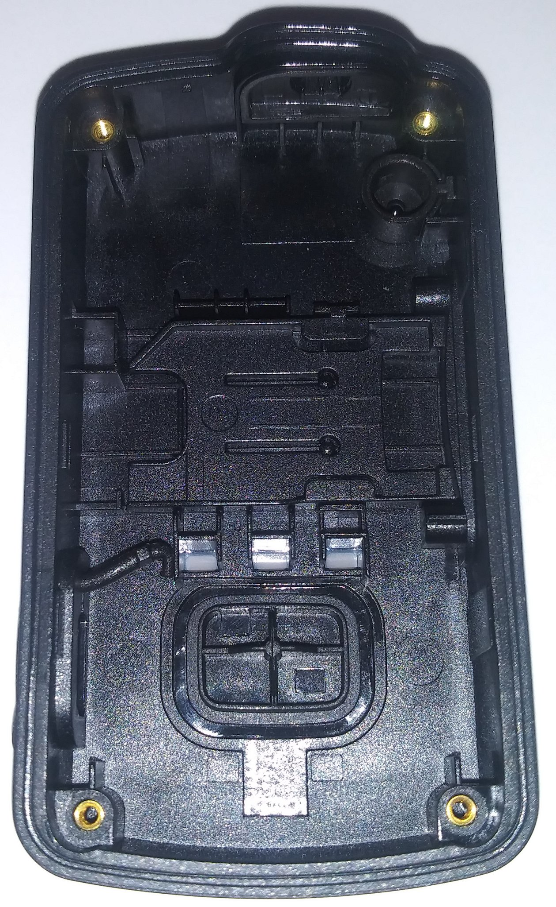 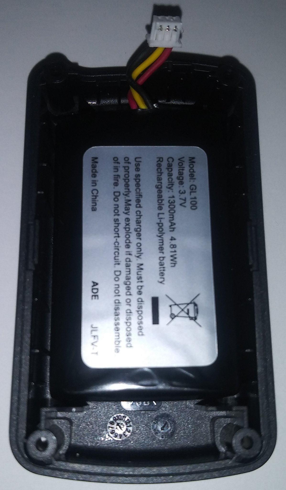
{kind=link}
{kind=link}
And here are some photos of the PCB (which sadly has annoying shielding)
 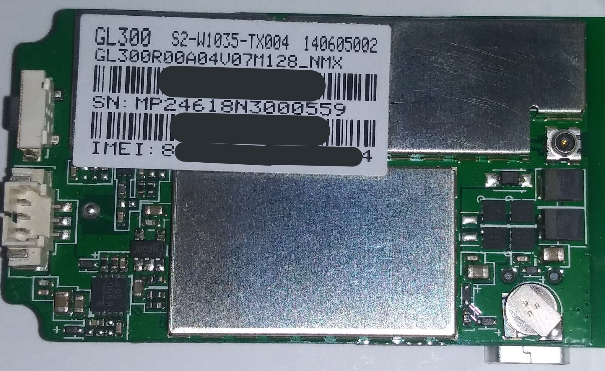
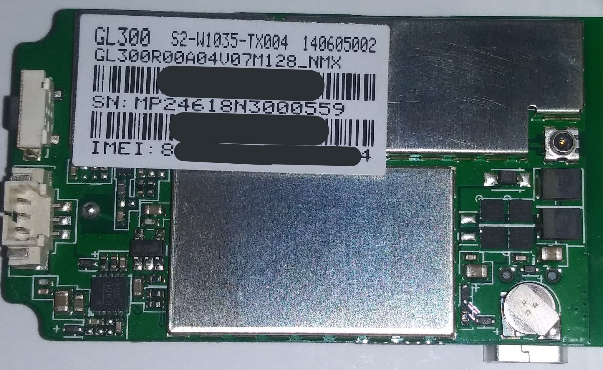
{kind=link}
These pins are for reading a sim card when there is one in the slot. Which there isn't for some reason..?
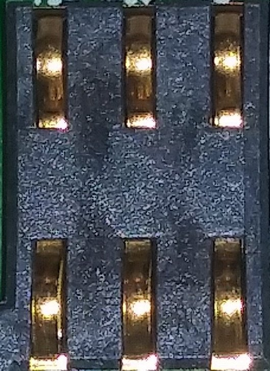
{kind=link}
This is the GPS itself, which I'd say is pretty important for a GPS tracking device
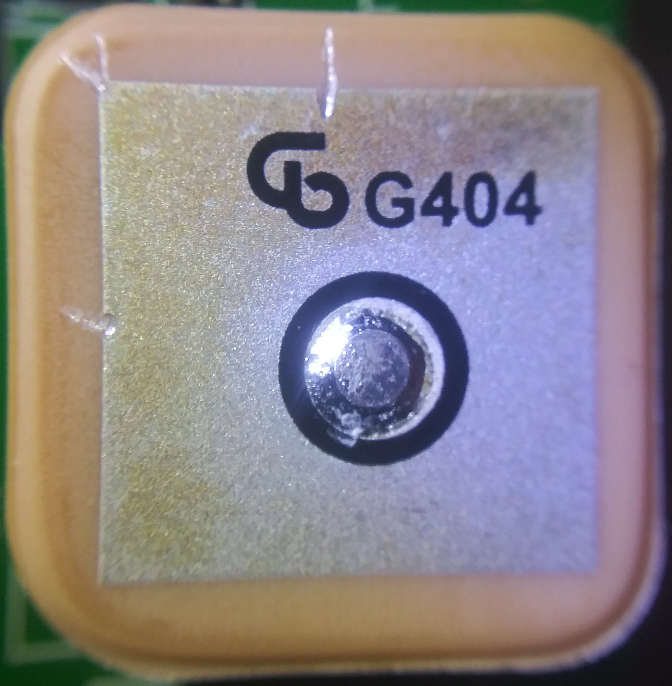
{kind=link}
And then there are quite a few test pads, with the main one that I'm interested in being the one that says `SAFEBOOT`
{kind=link}
Here are some photos of what is under the shielding, credit to the device's FCC documents
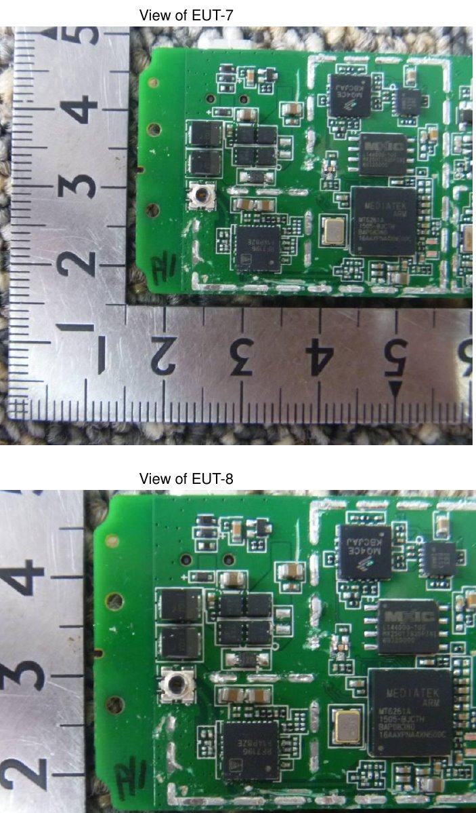
{kind=link}
The photos reveal that this uses a MediaTek MT6261A ARM processor. I'm beginning to have suspicions that this is running Android, or at least something like it
This is the closest diagram for the processor that I could find, though I'm not sure that it's for the same thing. (It's for the MT6260A, whereas the processor that I have is the MT6261A)
{kind=link}
To be continued...